Going Up to Yerushalayim
How do Israelis today regard the commandment to go up three times a year to the city of the Great King?
Alla Varentsov:
Why have they always longed so much to go there? From every corner of the Holy Land, Eretz Israel, and from the countries of the diaspora, Jews went to worship at the Temple in Jerusalem, so dear to their hearts. "Ba-shana ha-ba'a bi-Yerushalayim", "next year in Jerusalem", is the eternal hope of the sons of Yaakov scattered across the world.
"Neither shall any man desire thy land, when thou shalt go up to appear before the LORD thy God thrice in the year" (Exod. 34:24): a commandment of the Torah received by Israel three and a half thousand years ago. And although the world has changed completely since then, we repeat on foot the ascent of our ancient forefathers. Why? What draws us there?
On the way we see the same mountains covered with forests, the ancient mikvaot, pools for the purification and refreshment of travellers. They have survived thousands of years of wind, rain and scorching sun. Modern travellers, we see what the ancient pilgrims saw: the same olive and fig trees, the same stones, and the sun rising over the city that has kept its ancient charm. "If I forget thee, O Jerusalem, let my right hand forget her cunning," says the Psalmist (Ps. 137:5). The Spirit of God drew him to the courts of the house of the LORD, the place where he was happy.
Someone will say: "Going up to Jerusalem is an old, forgotten commandment." But my spirit thirsts!
***
Ephraim Kalish:
My first ascent to Jerusalem
I have been to Jerusalem many times, but I will remember this ascent for ever. For the first time in my life I went up to the Holy City on foot, as our fathers did. It is no accident that the three Jewish feasts, Pesach, Shavuot and Sukkot, are called REGALIM (the plural of REGEL, Hebrew for foot): our fathers went up to Jerusalem on foot to worship the LORD of Hosts and to celebrate before Him. As it is written: "Whither the tribes go up, the tribes of the LORD, unto the testimony of Israel, to give thanks unto the name of the LORD" (Ps. 122:4).
And although we did not walk the whole way from Haifa to Jerusalem (by the reckoning of those who know, that would take at least two weeks one way), excitement went with me from the very beginning until the moment we went up into the City of the King.
Our whole route ran through the territory of the tribe of Yehudah in the Judean Mountains. At least the part of the way that we walked followed the path by which our fathers went up to Jerusalem thousands of years ago, especially where we moved along a wadi (the Arabic name for a dry riverbed).
We began our ascent near a village in the Judean Mountains which two thousand years ago was called Emmaus (sixty stadia from Jerusalem). It was there that the disciples of Yeshua were walking, downcast, from Jerusalem, and were overtaken by the Messiah on the road (Luke 24:13–15). He accompanied us from the very beginning, through Emmaus, up to Mount Zion.
A little later, when I have gathered my thoughts, I will add to this account of my experiences. I will certainly make videos and notes here on the blog. Now, while everything in me is still seething, I hurry to share some of my impressions in photographs.
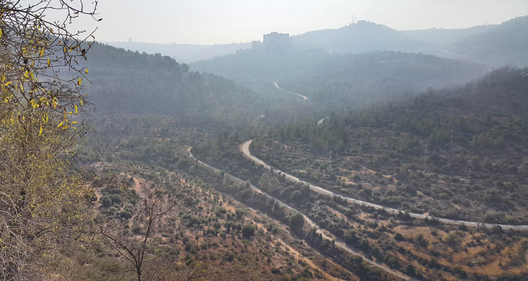
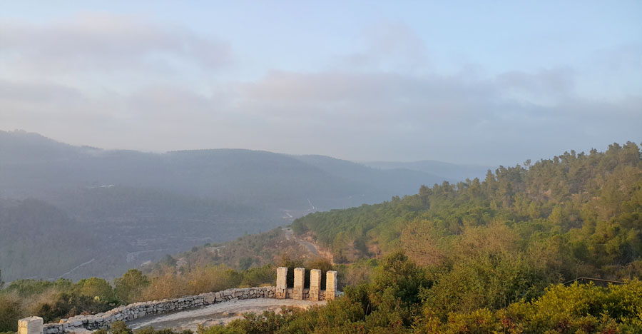
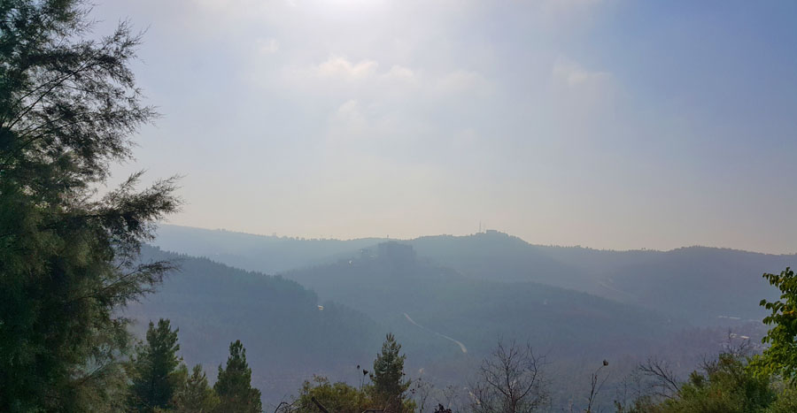
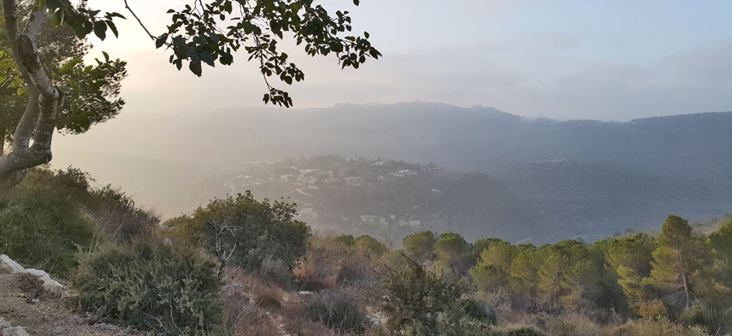
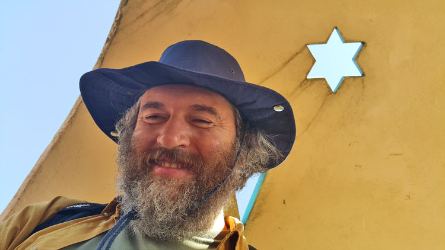
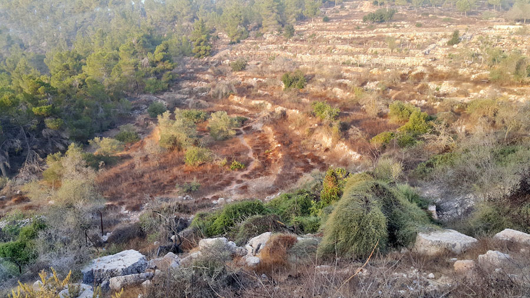
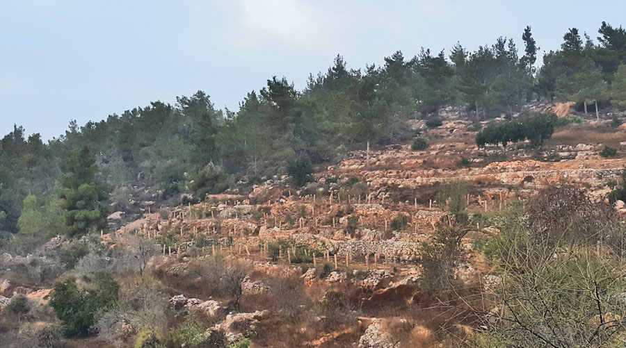
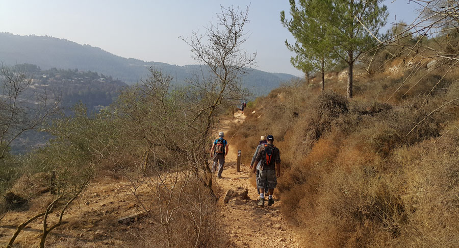
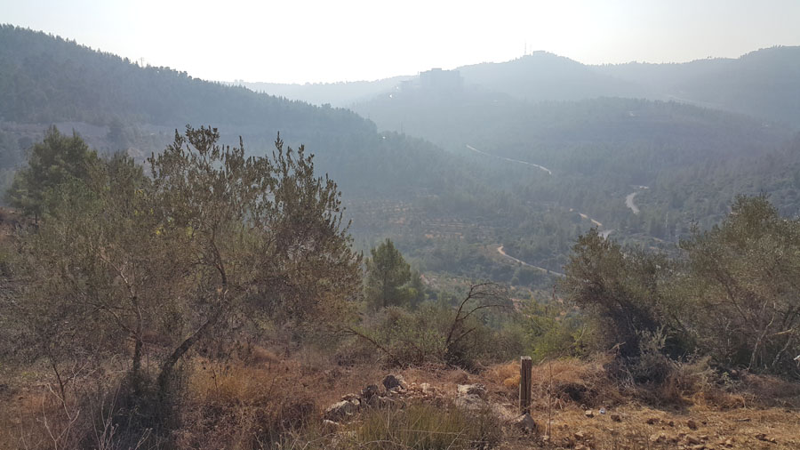
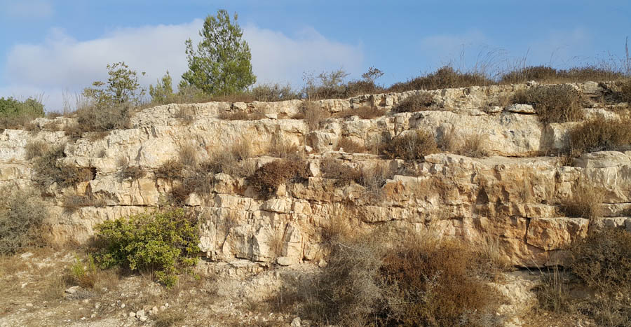
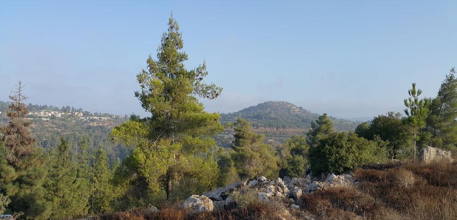
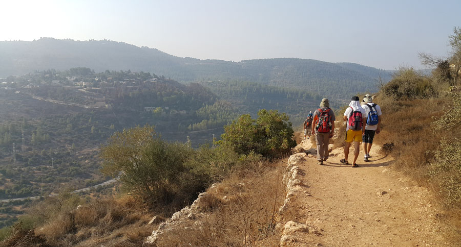
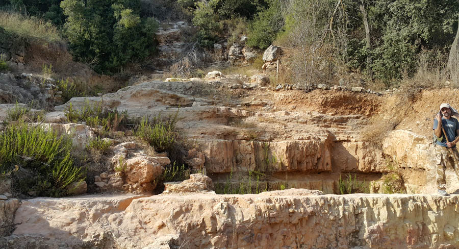
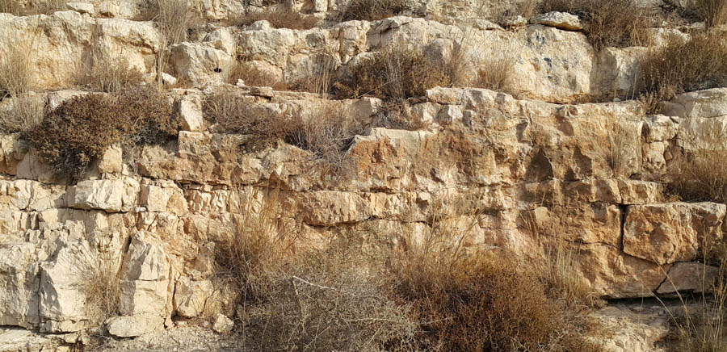
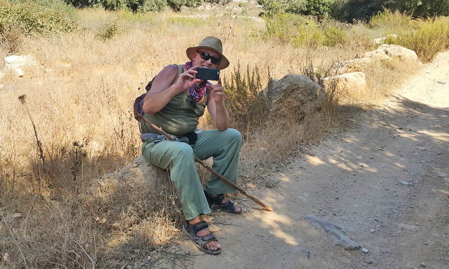
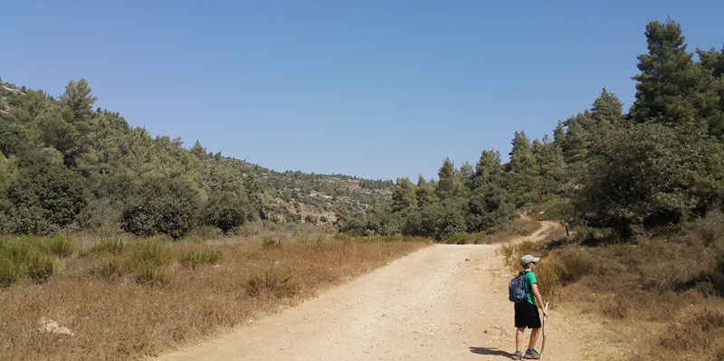
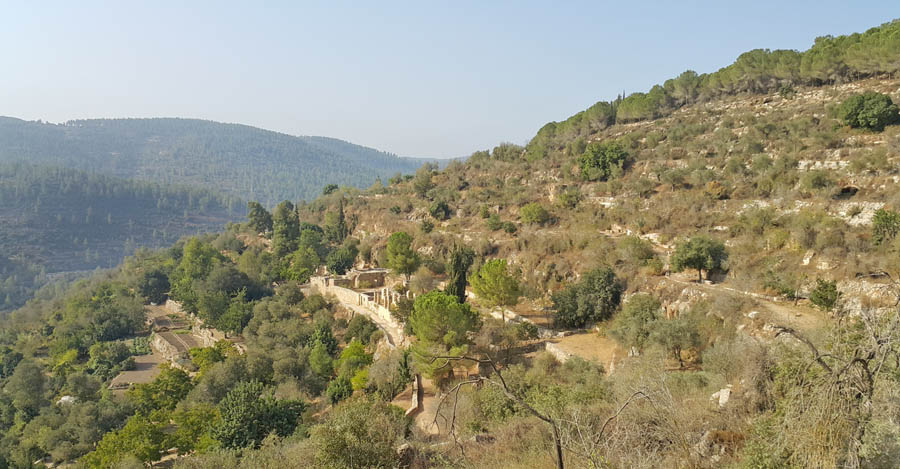
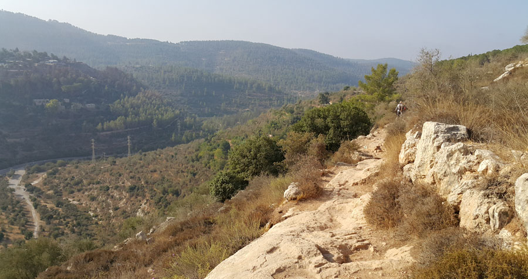
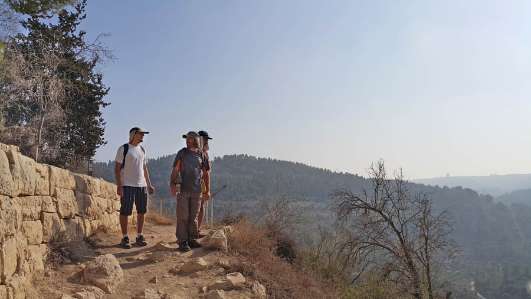

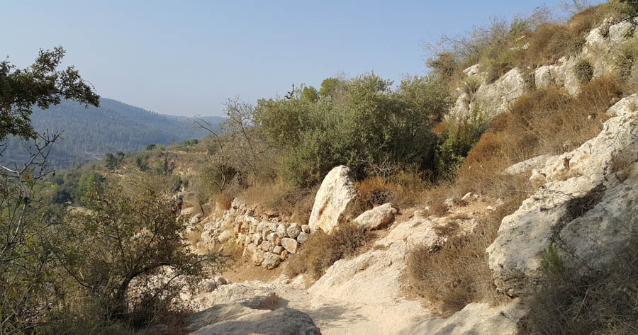
 The Ten Commandments (Anochi). Prayerful Chant
The Ten Commandments (Anochi). Prayerful Chant Blessings on the Chanukah Menorah
Blessings on the Chanukah Menorah The Power of Joy. Rejoice Always!
The Power of Joy. Rejoice Always!